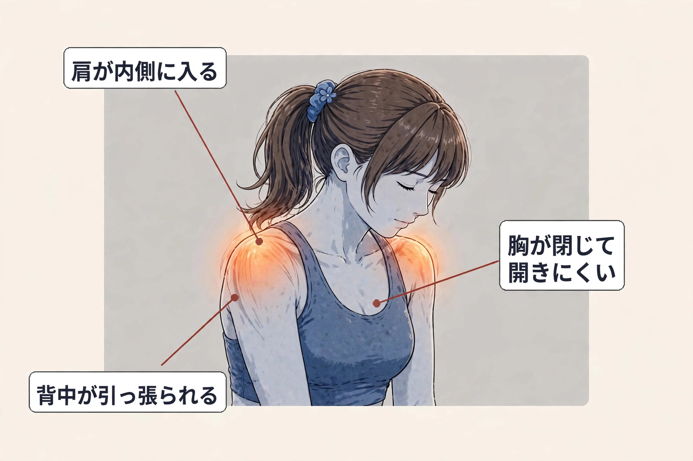

巻き肩
美容整体ステラ・ポラリス東三国｜大阪市淀川区東三国・東三国駅徒歩5分・女性向け

内側に巻いた肩を開いて、胸の開く姿勢へ
肩が内側に巻いて、腕が体の前に下がる——巻き肩は、スマートフォンやデスクワークの姿勢で起こりやすい、現代的な姿勢のクセです。胸が閉じることで呼吸が浅くなり、バストラインの下がりや首・肩のこりともつながります。自分では肩の巻きに気づきにくいことも多いお悩みです。このページでは、巻き肩の仕組みと、肩を開いて胸の開く姿勢を目指す当サロンでのケア、ご自宅でできるセルフケアをご案内します。巻き肩は、写真で自分の姿を見たときに気づく方も多い姿勢です。肩が内側に入ると、胸元が閉じて、全体の印象まで縮こまって見えます。
ご予約はこちら（Coubic）こんなお悩みありませんか
- 立ったときに、手の甲が前を向いている
- 肩が耳より前に出ている気がする
- 胸が閉じて、呼吸が浅く感じる
- デスクワークのあと、肩を後ろに回したくなる
- 後ろ姿の写真で、肩の丸さが気になる
- 肩こりや首こりも、セットで気になっている
- 腕を後ろに回す動きが、しにくい
当てはまる項目が多いほど、胸の前の縮みと背中側の弱さのバランスの崩れが積み重なっている目安とされています。巻き肩は前と後ろ、両方から整えることが大切です。次のセルフチェックで、肩の巻き具合の傾向を確かめてみましょう。巻き肩の確認は、横から撮った写真が分かりやすい方法です。耳と肩の位置関係を見ると、自分の姿勢の傾向がつかめます。
簡単セルフチェック（手の向きチェック）
立ったまま、手の向きで肩の巻きを確かめる簡単な方法です。
- 力を抜いて自然に立ち、腕を体の横に下ろします。
- 手のひらと手の甲の向きを確認します。
- 手の甲が前を向き、親指が内側を向いている場合は、肩が内側に巻いている目安と言われています。
※これは診断ではありません。ご自身の状態の傾向を知る目安としてお使いください。
巻き肩の原因と仕組み
胸の前の縮みと肩の巻き
巻き肩は、肩が内側に回り込んだ状態です。画面をのぞき込む姿勢が続くと、胸の前の筋肉が縮んだままになり、肩を内側に引っ張り続けると言われています。図1のように、肩の巻きは胸の閉じとセットで起こります。肩だけを後ろに引こうとしても、胸の前の縮みが残ると戻りやすいのはそのためです。巻き肩の姿勢では頭も前に出やすく、首の後ろに負担が集まります。肩だけでなく、頭の位置まで含めて整えることが大切です。

図1 肩が内側に巻いた状態で起こりやすい変化と、肩が開いた状態のイメージ。体の状態には個人差があります。
背中側の筋肉の弱さ
肩を正しい位置に保つには、背中側の筋肉の働きも必要です。背中側が引き伸ばされたまま使われにくくなると、肩を支える力が弱まり、巻きが定着しやすくなります。前の縮みをゆるめることと、後ろの働きを取り戻すことの両方が、巻き肩ケアの柱です。胸の前側の筋肉が縮むと、肩甲骨は外へ引かれたまま固まります。前と後ろの綱引きのバランスが、巻き肩の正体です。
呼吸と姿勢の印象
胸が閉じた姿勢では、呼吸が浅くなりやすく、全体の印象も縮こまって見えます。肩が開くと胸が広がり、バストラインの見え方や首の長さの印象まで変わります。巻き肩は見た目と体の感覚の両方に関わるクセです。胸が開いた姿勢では、空気が入りやすくなり、気持ちまで伸びやかに感じられます。姿勢の見直しは、見た目と体感の両方に届きます。
腕の使い方の偏り
スマートフォンを両手で前に持つ、キーボードを前に置くなど、腕を前で使う生活が続くほど、肩は内側に巻きやすくなります。生活の姿勢そのものが原因のため、日常の使い方を見直すこともケアの一部です。
セルフケアで足りる場合・サロンケアが向く場合
巻きが軽く、胸のストレッチをしたあとに肩が開く感覚がある場合は、まずご自宅でのセルフケアを続けて様子を見る方法があります。一方で、胸まわりが自分ではゆるめにくい、肩を開いた姿勢を保つ感覚がつかみにくい、首・肩のこりも重なっているという場合は、サロンでのケアが向いている目安になります。サロンでは、胸まわりと背中を整え、施術後に「肩が開いた」「胸で息ができる」と感じやすい状態を目指します。どちらが正解というものではなく、今の状態に合わせて選ぶことが大切です。施術の前後で、肩の位置を鏡で一緒に確認する時間も設けています。
当サロンでのケア
当サロンの巻き肩ケアは、「胸の前をゆるめ、肩が開く姿勢を取り戻す」ことを目指す組み立てです。まず肩の巻き具合と姿勢のクセを一緒に確認し、部位と目的に合わせて3つの手技を組み合わせます。
美容整体：肩の位置と背骨のラインを整え、肩が自然に開く姿勢の土台をつくることを目的に。まっすぐ立つ感覚を取り戻すお手伝いをします。
アロマオイルマッサージ：縮こまりやすい胸まわりや脇、首・肩をオイルでゆるめ、胸が開きやすい状態を目指します。
もみほぐし：肩甲骨まわりや背中側の筋肉をほぐし、肩を支える動きを引き出すことを目的に進めます。
ケアを通して目指すのは、こんな変化です。
- 肩が開いて、胸で深く息ができる感覚へ
- バストラインが上がって見える姿勢の土台へ
- 首・肩のこりがゆるんで、腕が回しやすい状態へ
- 後ろ姿がすっきり見える、姿勢の印象づくりへ
- 肩を開く姿勢のコツを知り、日常でも保ちやすい状態へ
施術の仕上げには、胸を開くストレッチや、画面作業の合間にできる肩のリセット方法もお伝えします。肩が開いた姿勢の心地よさを知ることが、日常の姿勢を見直すきっかけになります。巻き肩は毎日の姿勢のクセです。気づく回数を増やすことが、整える第一歩になります。

施術の流れ
ご来店後、気になる部位やお悩み、ご希望の強さなどをうかがいます。完全個室のため、周りを気にせずお話しいただけます。
肩の巻き具合や胸の開き、姿勢のクセなどを一緒に確認し、その日の状態に合わせた施術の進め方をご案内します。
美容整体を中心に、ご希望に応じてアロマオイルマッサージ、もみほぐしを組み合わせて進めます。強さは途中でも調整できます。
施術後の状態を確認し、ご自宅で続けやすいセルフケアのポイントをお伝えします。次回の目安についても、ご希望があればご案内します。
料金
| コース | 通常価格 | キャンペーン価格（12/25まで） |
|---|---|---|
| 80分 | 8,000円 | 3,000円 |
| 100分 | 10,000円 | 4,000円 |
| 120分 | 12,000円 | 5,000円 |
クリスマスキャンペーンは12月25日まで、ご新規様もリピーターの方も対象です。施術内容は当日の状態とご希望に合わせて組み立てます。
ご自宅でできるセルフケア
- 胸を開くストレッチ：ドアの枠に前腕をつけ、体を少し前に傾けて胸の前を伸ばします。左右20〜30秒を2セット、痛みのない範囲で行ってください。
- 肩甲骨寄せ：椅子に座り、両肘を後ろに引いて肩甲骨同士を寄せます。ゆっくり10回を2セットが目安です。
- 手のひら返し体操：腕を体の横に下ろし、手のひらを前→外へゆっくり返す動きを10回。肩の巻きをほどく意識で行います。
- 画面の位置の見直し：スマートフォンは目の高さに近づけて持つ、パソコンの画面は少し高くするなど、腕が前に出続けない工夫も大切です。
ご自宅でのケアに：セルフケア資料ライブラリ（無料）
このお悩みに合わせたセルフケアの考え方を、無料の資料ライブラリでご紹介しています。
セルフケア資料ライブラリを開く →
受診の目安
腕や手のしびれ、力が入りにくい感じがある場合や、肩の痛みが強く日常生活に支障がある場合は、施術の前に医療機関への受診をおすすめします。気になる症状があるときは、まず医療機関でご相談ください。
よくある質問
Q. 初めてでも大丈夫ですか？
はい。当サロンは完全予約制・完全個室で、1日3組までのご案内です。最初にカウンセリングで肩の巻き具合や姿勢のクセをうかがい、無理のない内容から始めます。施術の前後で「肩が開いた」「胸で息ができる」といった感覚の違いを一緒に確認しながら進めますので、初めての方も安心してご利用いただけます。
Q. 施術は痛いですか？
強さは、ご希望をうかがいながら調整します。胸まわりはやさしい圧を基本に、背中側は張りに合わせてほぐします。感じ方には個人差がありますので、施術中も遠慮なくお声がけください。
Q. コースはどう選べばいいですか？
80分・100分・120分のコースがあり、ケアしたい部位の広さやお時間のご都合に合わせて選べます。胸まわりから背中、首・肩までゆっくり整えたい方には、100分が選ばれることが多いコースです。迷われる場合は、ご予約の際にお気軽にご相談ください。
Q. 場所と予約方法を教えてください。
大阪市淀川区東三国、東三国駅から徒歩5分です。完全予約制のため、予約サイト（Coubic）またはLINE公式アカウントからご予約をお願いしています。
Q. 男性も受けられますか？
当サロンは女性向けのため、男性の方は、同じ東三国の男性専用整体院「北辰堂」をご案内しています。
施術者について
平賀建人（施術歴30年）
鍼灸師・登録販売者・アロマセラピスト・パーソナルトレーナーの資格を持ち、美容整体を中心に、アロマオイルマッサージ、もみほぐしを、その日の状態とご希望に合わせて組み合わせて施術します。このページの内容は、施術者の知識と経験をもとに作成しています。

料金・ご予約
ご新規様もリピーターの方も 12/25まで
80分 3,000円／100分 4,000円／120分 5,000円
通常価格は80分8,000円／100分10,000円／120分12,000円です。施術内容はご希望に合わせて組み立てます。
営業時間：月〜土 17:00〜23:00／日 10:00〜23:00（完全予約制）｜電話：080-2468-3086
大阪府大阪市淀川区東三国2丁目25番4号101（東三国駅徒歩5分）